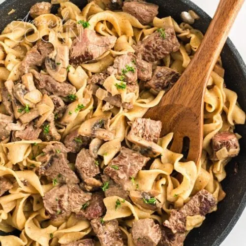

Beef Stroganoff
Home

A creamy beef and noodles dish that is guaranteed to satisfy all cravings
This is an easy to make recipe that is sure to make you and all of your
family happy!!
Ingredients
- ground beef
- onion
- garlic
- salted butter
- all-purpose flour
- beef broth
- sour cream
- cream of mushroom soup
- egg noodles
Steps
- boil the egg noodles
- brown the ground beef along with the onions and garlic
- drain the ground beef
- put pan back on stove, add butter to the pan and let it melt
- add flour to the pan and whisk
-
add beef broth to pan and whisk vigorously bringing to a boil for 2-3
minutes
-
turn temp down to medium and whisk in sour cream and cream of mushroom
soup
- add ground beef back to the mixture
- serve over egg noodles and ENJOY!!